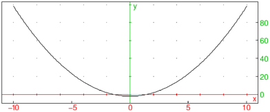
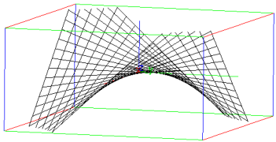

17.8.1 Bezier curves
The Bezier curve with the control points P0,P1,…,Pn is the curve
parameterized by
The bezier
command plots Bezier curves.
-
bezier takes a sequence of arguments:
-
controls, a sequence of control points.
- plot, the symbol.
- bezier(controls,plot)
plots the Bezier curve with the
given control points.
Examples
| bezier(1,1+i,2+i,3-i,plot) |

| bezier(point(0,0,0),point(1,1,0),point(0,1,1),plot) |

To get the parameterization of the curve, use
the parameq command (see Section 24.12.8).
Examples
| parameq(bezier(1,1+i,2+i,3-i)) |
|
| |
| ⎛
⎝ | 1−t | ⎞
⎠ | 3+3 t | ⎛
⎝ | 1−t | ⎞
⎠ | 2 | ⎛
⎝ | 1+i | ⎞
⎠ | +3 t2 | ⎛
⎝ | 1−t | ⎞
⎠ | ⎛
⎝ | 2+i | ⎞
⎠ | +t3 | ⎛
⎝ | 3−i | ⎞
⎠ |
| | | | | | | | | | |
|
| parameq(bezier(point([0,0,0]),point([1,1,0]),point([0,1,1]))) |
|
| |
| ⎡
⎣ | 2 t | ⎛
⎝ | 1−t | ⎞
⎠ | ,2 t | ⎛
⎝ | 1−t | ⎞
⎠ | +t2,t2 | ⎤
⎦ |
| | | | | | | | | | |
|